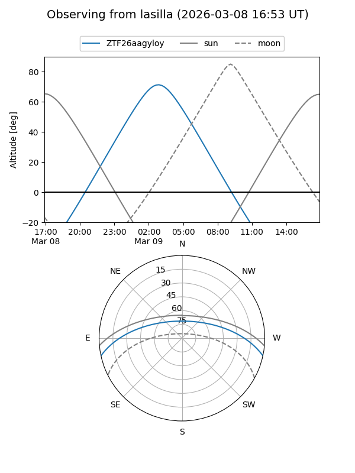
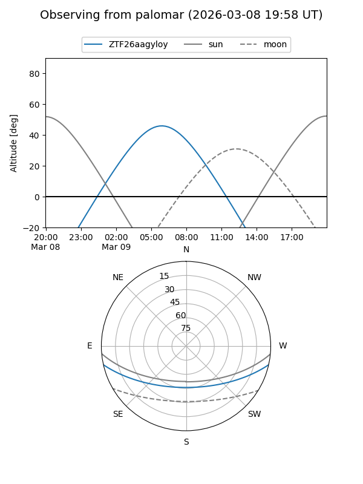

ZTF26aagyloy
Target ZTF26aagyloy at 2026-03-09 07:44
Aliases and brokers:
FINK: link
Lasair: link
ALeRCE: link
alt names
ZTF26aagyloy (ztf,fink_ztf)
Coordinates:
equatorial (ra, dec) = 138.2415,-10.54706
equatorial (HMS+DMS) = 09:12:57.96,-10:32:49.42
galactic (l, b) = (240.7247,+25.03391)
Flags:
Photometry:
last ztfg=19.06
1 ztfg detections
Lightcurve
Visibility


Additional plots